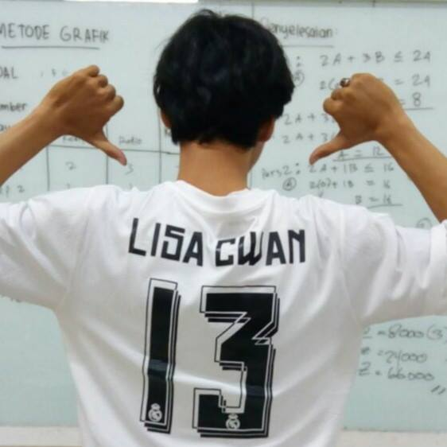

Apa itu Madridista? Madridista adalah sebutan bagi penggemar pendukung, atau fans setia klub besar yang berlaga di Liga Spanyol yaitu Real Madrid. Klub Real Madrid sendiri punya julukan El Real. Madridista Indonesia adalah wadah resmi para pendukung Real Madrid di Tanah Air. Bahkan Madridista Indonesia telah diakui secara resmi oleh Real Madrid sebagai fans club resmi klub tersebut.
Kini jejaring Madridista, tersebar di banyak kota di seluruh Indonesia. Setiap Real Madrid bertanding, para anggota Madridista selalu menggelar acara nonton bareng atau nobar. Jumlah anggotanya pun sangat banyak. Kabarnya jumlah fans Real Madrid di Indonesia, mencapai 8 juta orang. Jumlah ini disebut-sebut fans El Real terbanyak di seluruh dunia.